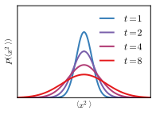
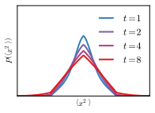

Diffusion in Cells
Group Meeting, November 14, 2014
Wendell Smith
Motivation
Biology
- Particles in cells do not simply diffuse
- Movement does not obey $\left< x^2 \right> \propto t$
- Highly non-Gaussian
not slope 1!
Motivation
Physics
- Just how non-gaussian can hard spheres get?
- At low density, hard spheres are perfectly gaussian
- Closer to the glass transition, they get somewhat non-gaussian
What does non-Gaussian mean?
- $\alpha_2 = \frac{\left< x^4 \right> }{3 \left< x^2 \right> } - 1$
- For a Gaussian distribution, $\left< x^4 \right> = 3\left< x^2 \right>$, so $\alpha_2 = 0$
What does non-Gaussian mean?
- A random walk (diffusion) is Gaussian at any given time:
- $P(x, t) = \frac{1}{2 \sqrt{\pi D t}} e^{-\frac{x^2}{4 D t}}$
- So if the particles aren't diffusing, then $\alpha_2 \neq 0$
- For caged particles, $\alpha_2 = -\frac{1}{5}$
What does non-Gaussian have to do with the MSD?
- Short answer: its what you can't see in an MSD plot
- The MSD gives you the mean squared displacement
-
It measures the width of particle displacements of time
- $\alpha_2$ measures how "non-gaussian" the distribution is

Diffusion
$\alpha_2 = 0$

Mixed
$\alpha_2 > 0$

Caging
$\alpha_2 = -\frac{1}{5}$